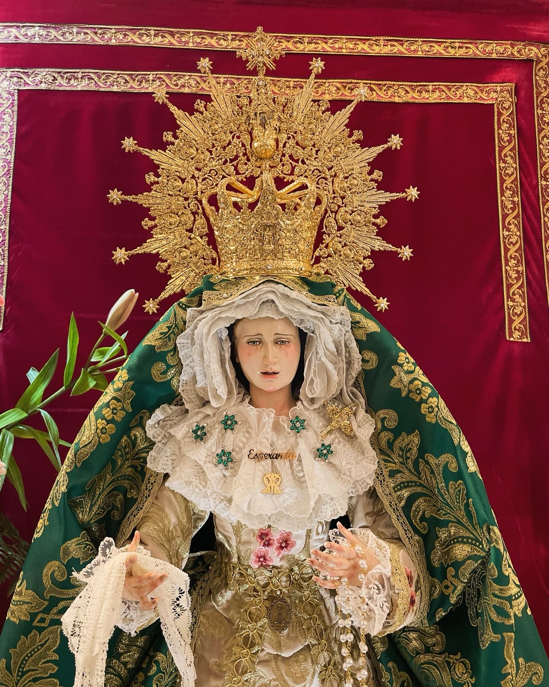
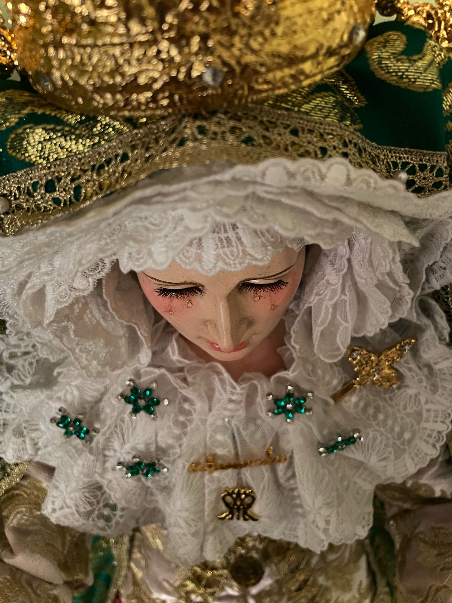
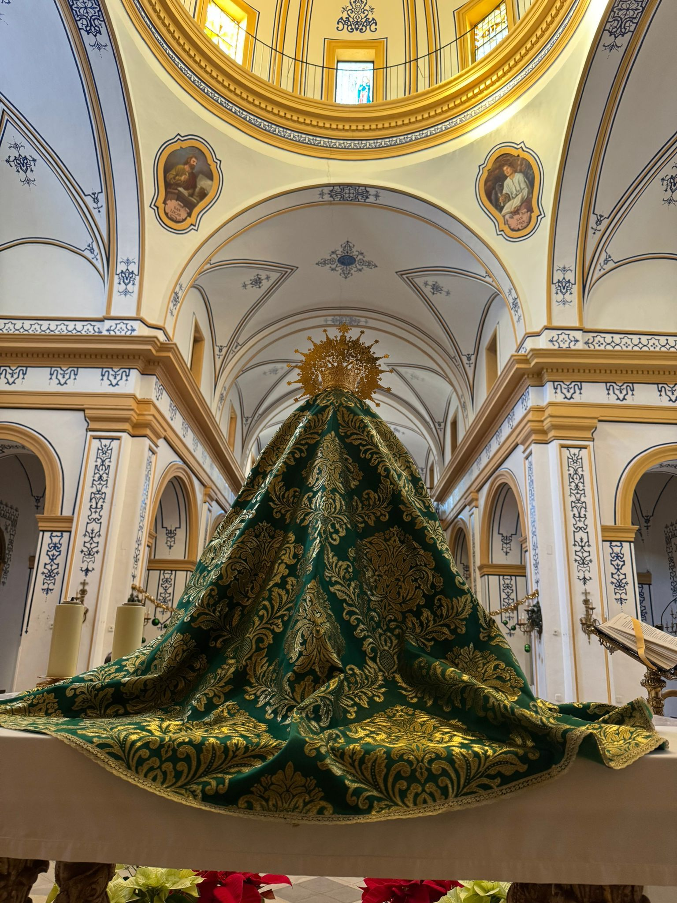
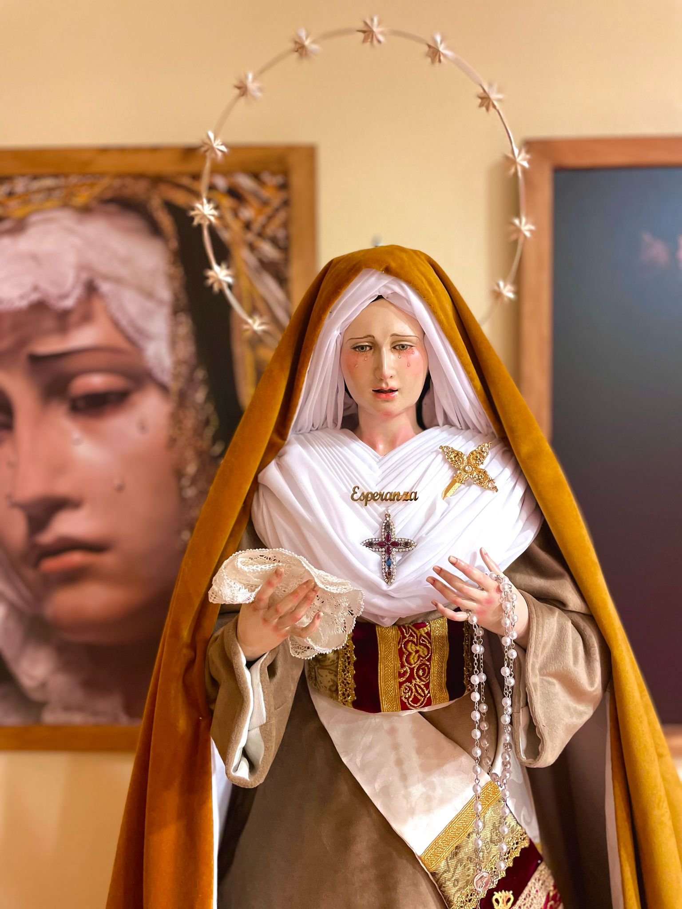

Virgen de la Esperanza
"La Esperancita"
La Virgen de la Esperanza es una imagen religiosa venerada en La Ñora (Murcia).Fue encargada 27 de Abril de 2024 por el escultor Sergio Torres Moreno de Puente Genil (Córdoba). Considerada una obra maestra. Fue entregada el 9 de octubre de ese mismo año. La Virgen de la Esperanza fue bendecida el 22 de diciembre 2024.
La Virgen de la Esperanza es la titular de la Hermandad de la Esperanza perteneciente a la Cofradía de Nuestra Señora del Paso que fue fundada en 1993. La Hermandad realiza su estación de penitencia el Quinto domingo de ceniza recorriendo las calles del centro histórico de La Ñora.
La imagen de la Virgen de la Esperanza es una dolorosa de candelero, destacamos la exquisitez de las policromías aplicadas al óleo, logrando acabados de una suavidad cristalina que infunden a la pieza un distinguido toque de solera y un encanto auténtico de antigüedad.
   